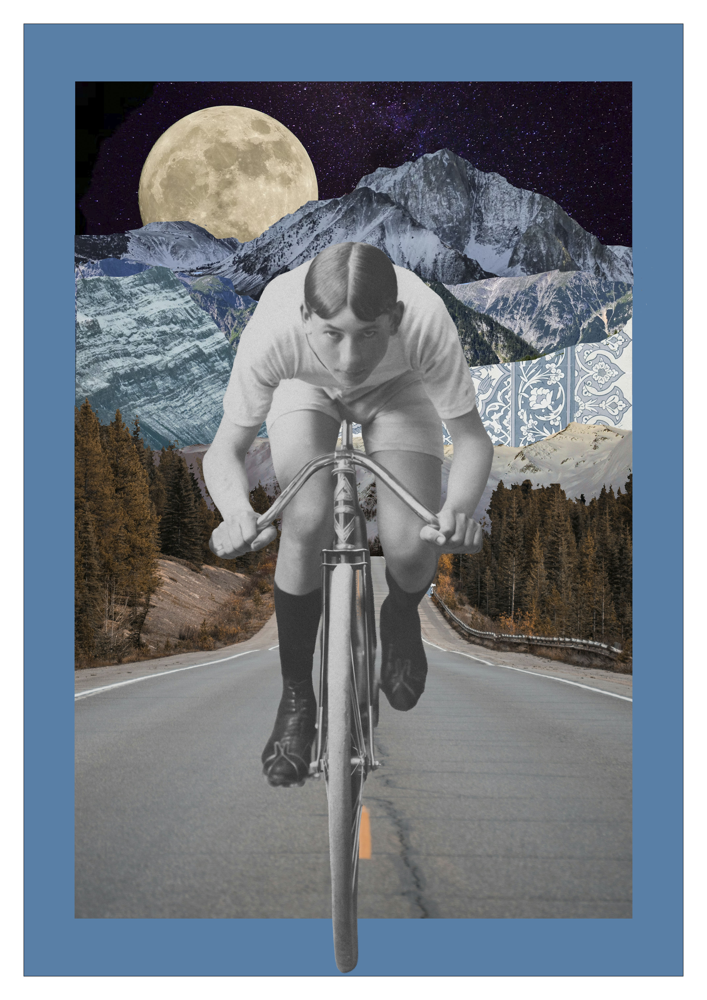

Creative Craft
Et kreativt forløb, hvor jeg arbejdede med at omsætte idéer og stemninger til grafiske plakater. Jeg eksperimenterede med typografi, billedmanipulation, farver og komposition og arbejdede både med en fiktiv filmplakat og en surrealistisk collage..

Om projektet
Opgaven var at skabe grafiske plakater, hvor typografi og billeder skulle være med til at fortælle en historie eller skabe en bestemt stemning. Jeg skulle derfor tænke mere kreativt over, hvordan billeder, ord, farver og komposition kunne spille sammen.
Jeg valgte at arbejde med to forskellige udtryk. Den ene plakat tog udgangspunkt i en fiktiv filmplakat, hvor fokus var på stemning og typografi. Den anden blev en surrealistisk collage, hvor jeg arbejdede mere frit med at kombinere forskellige billeder og skabe et univers, der ikke kunne eksistere i virkeligheden.
Processen
Jeg startede med at finde inspiration og eksperimentere med forskellige idéer til komposition, typografi og billedudtryk. Derefter arbejdede jeg videre i Illustrator og Photoshop, hvor jeg testede forskellige måder at kombinere billeder, farver og tekst på.
- Udvælgelse og research af billedmateriale
- Collage og sammensætning af lag i Photoshop
- Farvekorrektion og duotone
- Typografi og skriftvalg til hver plakat
- Finjustering af komposition og beskæring
Resultatet
Resultatet blev to plakater, der viser to forskellige sider af grafisk design. Filmplakaten arbejder mere med typografi, stemning og et filmisk udtryk, mens den surrealistiske collage er mere eksperimenterende og billedbaseret. Filmplakaten er lavet som et fiktivt designprojekt og skal ikke opfattes som en officiel plakat eller materiale for den eksisterende film. Jeg har derfor tydeliggjort det fiktive element i designet. Forløbet gav mig mulighed for at arbejde mere frit og eksperimenterende med grafisk design og samtidig blive bedre til at bruge billeder og typografi som en del af den visuelle fortælling.
